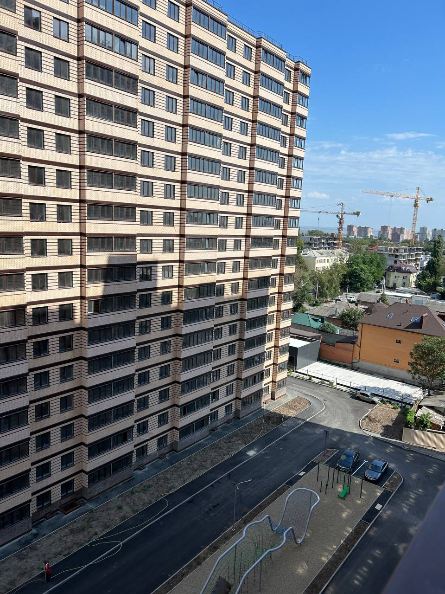
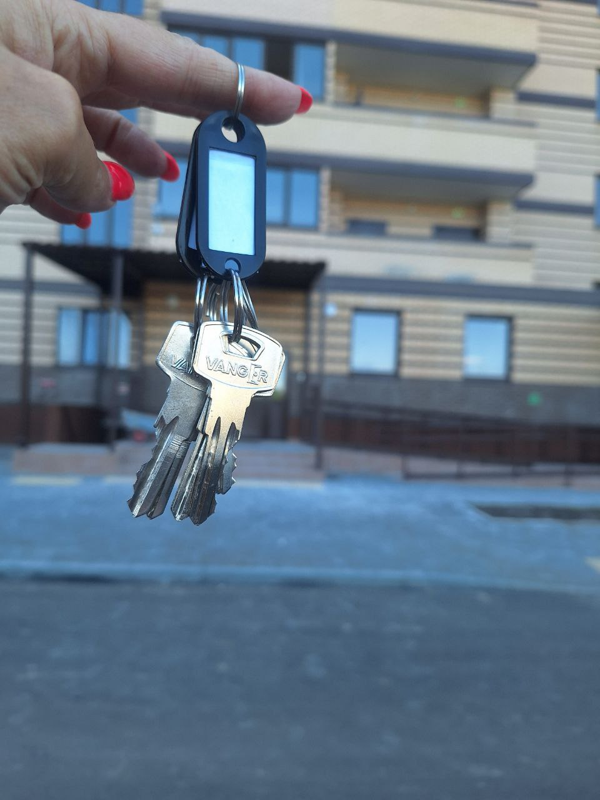

Приглашаем в закрытую группу дольщиков ЖК Линии
Этот бот поможет Вам присоединиться к нашей частной группе

О КАНАЛЕ
ТЕЛЕГРАММ-ЧАТ СОБСТВЕННИКОВ ЖК ЛИНИИ ВТОРОЙ СДАЧИ
- Знакомства с будущими соседями
- Обсуждение ремонта
- Обсуждение благоустройства территории
- Обсуждение и решение административных вопросов в онлайн формате
- Обмен полезными контактами
- Общение в чате, поделенное на секции
- И многое другое


ЧАСТО ЗАДАВАЕМЫЕ ВОПРОСЫ
Что нужно сделать, чтобы вступить в чат?
Чтобы вступить в наш чат, нужно подать заявку на вступление через ссылку-приглашение.
Что необходимо для вступления в чат?
Принимаем только при предъявлении ПРИЛОЖЕНИЯ ДДУ.
С кем связаться по поводу вступления в чат?
Напишите в секретный чат владельцу чата или его администраторам.
Как быстро меня добавят в чат?
Стараемся максимально быстро осуществить прием заявок.
Я живу в другом комплексе, могу ли я просто добавиться к вам в чат?
Нет. Мы добавляем только собственников жилого комплекса "Линии" второй очереди.
Как мне создать секретный чат в телеграмм?
Чтобы создать секретный чат с пользователем, необходимо зайти в профиль владельца или администраторов->кнопка "Еще"->"Начать секретный чат". Можно установить таймер автоудаления сообщений(в правом нижнем углу)
Контакты
Чтобы добавиться в наш чат, перейдите по ссылке-приглашению.